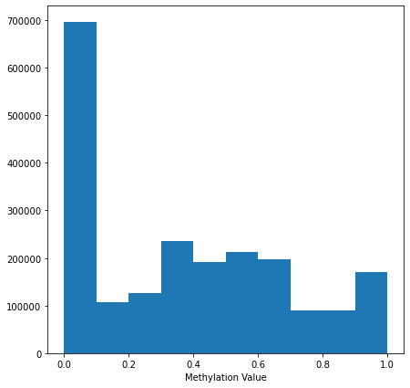

Methylation
Data source and info
Provided from CCLE 2019 release of CCLE DNA methylation data (promoter CpG clusters).
Citation:
- Mahmoud Ghandi, Franklin W. Huang, Judit Jané-Valbuena, Gregory V. Kryukov, ... Todd R. Golub, Levi A. Garraway & William R. Sellers. 2019. Next-generation characterization of the Cancer Cell Line Encyclopedia. Nature 569, 503–508 (2019).
"RRBS: For 843 cell lines, the RRBS method was used as previously described in [2]"
- Boyle, P. et al. Gel-free multiplexed reduced representation bisulfite sequencing for large-scale DNA methylation profiling. Genome Biol. 13, R92 (2012).
Reactome FI Coverage
11300 / 13609 (83%) of the reactome FI genes have methylation values.
LINCS Coverage
Of all the cell lines in LINCS, and within those lines that also have coverage in CNV, Expression and Mutation, there are 115 cell lines that also have methylation coverage.
Methylation distribution
Methylation values range from [0,1].

Cross-gene aggregation and mean-imputation
The dataset provided by [1] (downloaded through DepMap) contains multiple CpG sites per Gene. We first convert to ensembl ID's (as some genes map to the same ensembl ID), and then aggregate the average methylation value for each ensembl gene identifier. After this step, ~1.5% of values were NA.
NA values are imputed by filling with the mean methylation value (~0.35).
Accessing individual cell line methylation
We can get a specific cell line's methylation by using the method:
x = gnn_cdr.depmap.get_cell_line_ccle_methyl(methyl, cell_line, genelist, impute_val)
where:
methylis the pandas dataframe returned byload_ccle_methyl().cell_lineis the cell_iname identifiergenelistis the list of genes to return; note, genes that are in genelist but not in expr will be imputed byimpute_val.impute_valwill be used to fill missing genes methylation value.